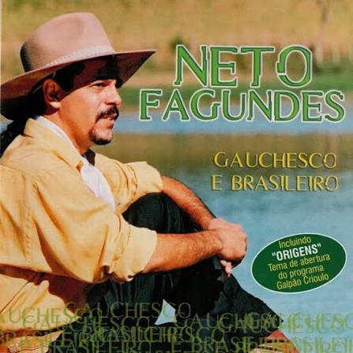

Não me perguntes onde fica o alegrete
Segue o rumo do teu próprio coração
Cruzarás pela estrada algum ginete
E ouvirás toque de gaita e de violão
Pra quem chega de rosário ao fim da tarde
Ou quem vem de uruguaiana de manhã
Tem o Sol como uma brasa que ainda arde
Mergulhado no rio Ibirapuitã
Ouve o canto gauchesco e brasileiro
Desta terra que eu amei desde guri
Flor de tuna, camoatim de mel campeiro
Pedra moura das quebradas do Inhanduí
Ouve o canto gauchesco e brasileiro
Desta terra que eu amei desde guri
Flor de tuna, camoatim de mel campeiro
Pedra moura das quebradas do Inhanduí
E na hora derradeira que eu mereça
Ver o Sol alegretense entardecer
Como os potros vou virar minha cabeça
Para os pagos no momento de morrer
E nos olhos vou levar o encantamento
Desta terra que eu amei com devoção
Cada verso que eu componho é um pagamento
De uma dívida de amor e gratidão
Ouve o canto gauchesco e brasileiro
Desta terra que eu amei desde guri
Flor de tuna, camoatim de mel campeiro
Pedra moura das quebradas do Inhanduí
Ouve o canto gauchesco e brasileiro
Desta terra que eu amei desde guri
Flor de tuna, camoatim de mel campeiro
Pedra moura das quebradas do Inhanduí
Ouve o canto gauchesco e brasileiro
Desta terra que eu amei desde guri
Flor de tuna, camoatim de mel campeiro
Pedra moura das quebradas do Inhanduí
